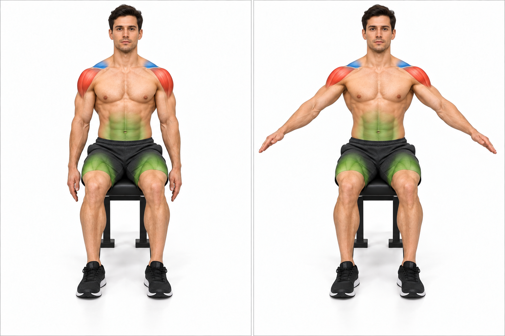
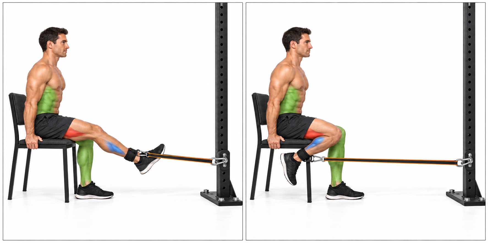
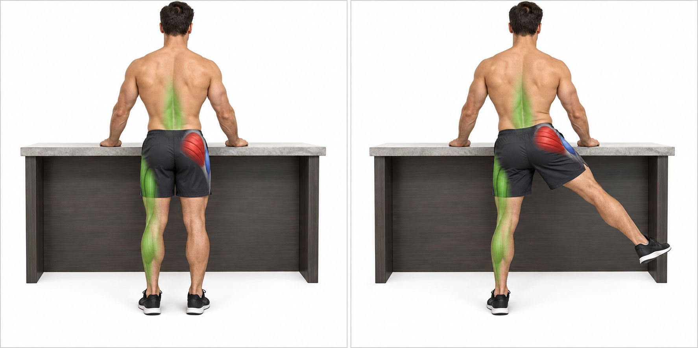
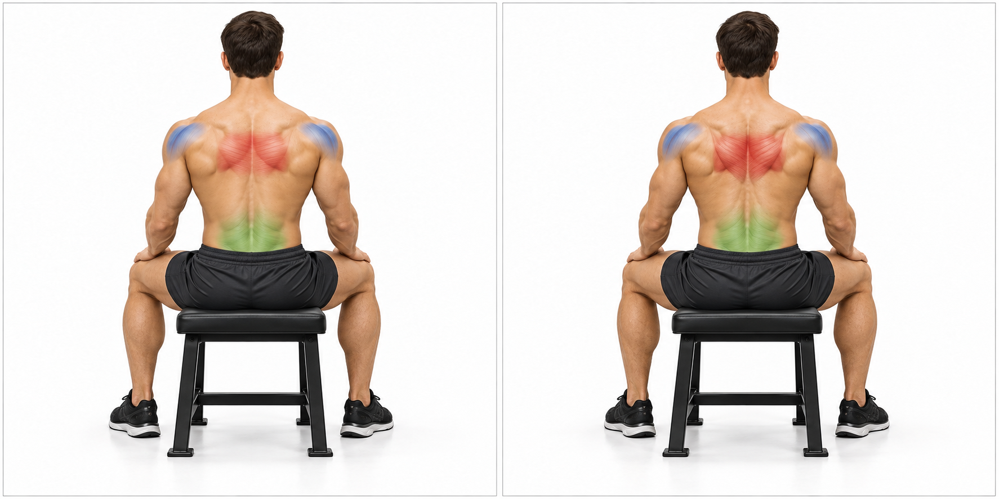

PDFs download from this page; no cloud preview is required.
PROJECT 100 / KUZARO FOCUSED DAYS / LEVEL 1
Three days. Clear focus.
Days 1-3: push, supported lower body and pull.
Main / movement focusSecondary / assist and controlBase / support / steady the positionOrange line / resistance band
DAY 1Push / shoulder controlChest, elbow extensors and comfortable shoulder control
DAY 2Lower body / supported baseKnee and hip extension, hamstrings, calves and lateral hip control
DAY 3Pull / arm controlBack pulling, shoulder-blade control and elbow flexors
Educational draft based on PROJECT 100's supported training style. Current symptoms, restrictions and tolerated loads have not been confirmed. Review suitability with a qualified clinician or trainer if pain, injury or medical restrictions apply.
Level 1 / baseline
2 main sets and 1 accessory sets on focused days. Control drills stay at one easy set. Keep 4+ more good repetitions still possible. Day 5 is capped at two sets; day 6 stays one easy set with 5+ in reserve.
1 kit(s) and 1 band(s) per working line are equipment ceilings. Resistance remains individually selected; unloaded practice is valid.
The companion full-body guide covers days 5-6. Days 4 and 7 are rest.
Before each session: inspect the anchor, bands, clips and interfaces; position stable supports; warm up with 5-10 minutes of comfortable activity and unloaded movement rehearsal. Establish the base and test a few easy repetitions before adding tension.
01 / Base
Plant feet and position a stable bench or chair.
Keep support contacts steady; do not force knees or elbows into a hard lock.
02 / Brace and support
Gently firm the trunk and keep breathing.
Stabilize the parts that should stay quiet while allowing the working joints and shoulder blades to move naturally.
03 / Main action
Follow the guide's movement path with a comfortable grip and smooth tempo.
Exhale during effort; keep the band path and recoil area clear.
04 / Return and check
Control the recoil.
End the set before fatigue causes twisting, shrugging, leaning, loss of balance or forced joint range.
Read all three roles
Main / movement focusSecondary / assist and local controlBase / support / steady the positionOrange line / resistance band
Main identifies the intended movement focus. Secondary includes movement assistants and local control. Base / support describes the postural work and contact points that steady the exercise. A muscle can change role between exercises; green does not mean unimportant.
Choose resistance by control
First rehearse unloaded. Add only enough resistance to stay within the guide's range while keeping the required repetitions in reserve. Use one limb at a time when one kit cannot provide matching bands. Do not mix unequal left and right lines to imitate a paired setup.
KUZARO: one each of 35, 45, 55, 65, 75 and 85 lb per kit. HPYGN is a separate system: two 65 lb bands per side, 130 lb nominal per side and 260 lb combined nominal. Neither label sum is measured hand force, a hardware rating or a free-weight equivalent.
Stop for pain, new numbness or weakness, dizziness, a slipping grip, moving support or a damaged band. Do not push through joint pain. Keep the recoil path away from the face and bystanders; follow band and anchor manufacturers' limits.
DAY 1 / LEVEL 1
Push / shoulder control
Chest, elbow extensors and comfortable shoulder control
Read each linked technique guide before starting. Warm up and rehearse unloaded; check the base, breathing and return.
Sit tall with both feet planted. Start with the handle beside the chest, neutral wrist and elbow below shoulder height. Let the shoulder blade move naturally.
Which muscles are working?Pectoralis major: moves the upper arm forward and across the chest.
Plant both feet in a comfortable stagger. Support the opposite palm under its shoulder. Incline from the hips; keep neck and trunk aligned, knees soft.
Which muscles are working?Latissimus dorsi: draws the upper arm back toward the trunk.
Use a stable non-rolling chair and a secure anchor behind you near chest height.
Keep the band beside the arm, away from the neck and face.
2. Find a steady position
Sit tall with both feet planted.
Start with the handle beside the chest, neutral wrist and elbow below shoulder height.
Let the shoulder blade move naturally.
3. Make the movement
Breathe out and press forward smoothly while keeping ribs and pelvis steady.
Do not lean or twist to finish.
4. Return slowly
Finish before the elbow locks; return only as far as the shoulder remains comfortable.
Avoid a deep forced stretch behind the torso.
Understand the whole position
Main:
Pectoralis major: moves the upper arm forward and across the chest.
Secondary:
Triceps extend the elbow; anterior deltoid assists. Scapular muscles guide the shoulder blade.
Base / support:
Trunk muscles resist rotation; the chair and planted feet stabilize the pelvis and legs.
Watch for: If the ribs flare, shoulder pinches or trunk turns, shorten the range and lower the load. Easier: Use an unloaded press rehearsal or a comfortable wall press-up instead.
Stable support means controlled contact and soft joints, not forced joint locking. Muscle colours describe roles for this exercise, not measured activation; hidden muscles remain in the text.
Use one secure high rack anchor, one rated pull line and a straight-bar attachment.
Position a stable chair so the line stays in front of the body.
2. Find a steady position
Plant both feet; sit tall.
Keep upper arms beside the ribs and wrists in line with forearms.
Choose a grip you can hold without strain.
3. Make the movement
Exhale and extend the elbows without pushing the shoulders down with body weight.
Keep the upper arms nearly still.
4. Return slowly
Stop short of snapping the elbows straight.
Return gradually into comfortable elbow flexion without letting the bar rise toward the face.
Understand the whole position
Main:
Triceps brachii: straightens the elbow.
Secondary:
Forearm muscles steady the grip and wrist; shoulder muscles hold the upper arms beside the torso.
Base / support:
Trunk muscles hold a quiet seated posture; both feet and the chair provide support.
Watch for: Avoid a rocking torso, bent wrists or moving the whole upper arm. Reduce load if the elbows or grip lose control. Easier: Rehearse the elbow motion unloaded or use a lighter single-handle variation matched to current tolerance.
Stable support means controlled contact and soft joints, not forced joint locking. Muscle colours describe roles for this exercise, not measured activation; hidden muscles remain in the text.
PROJECT 100 / EXERCISE GUIDE
Short-arc shoulder raise
Shoulder control · 6-10 easy repetitions · resistance selected individually

START / arms loweredFINISH / short comfortable arc
Follow these four steps
1. Prepare your equipment
Begin without a band.
Use a stable chair with room at both sides.
This is a comfortable movement rehearsal, not a heavy raise.
2. Find a steady position
Sit tall, feet planted, elbows softly bent and hands relaxed.
Start with arms beside the body.
3. Make the movement
Lift in a slightly forward plane with thumbs comfortably forward or up.
Breathe normally and keep the neck relaxed.
4. Return slowly
Use a small pain-free arc below shoulder height; stop sooner if the shoulder hikes, pinches or the torso leans.
Understand the whole position
Main:
Middle deltoid contributes to lifting the arm out to the side.
Secondary:
Supraspinatus assists the lift; rotator-cuff and scapular muscles coordinate the shoulder.
Base / support:
Trunk muscles and planted feet keep the torso quiet; a chair supports the seated base.
Watch for: Do not force the arms overhead or use a shrug to gain height. A smaller controlled arc is the aim. Easier: Move one arm at a time through a shorter comfortable arc, or omit if symptoms occur.
Stable support means controlled contact and soft joints, not forced joint locking. Muscle colours describe roles for this exercise, not measured activation; hidden muscles remain in the text.
SETUP / balanced sittingHOLD / gentle brace and breathing
Follow these four steps
1. Prepare your equipment
Use a stable chair.
No band is required; this is a low-effort control drill.
2. Find a steady position
Sit comfortably tall with ribs over pelvis and both feet on the floor.
Keep shoulders relaxed and avoid arching the back.
3. Make the movement
Gently firm the midsection as if preparing for a light nudge.
Take slow normal breaths without bearing down.
4. Return slowly
Hold only while breathing and posture stay easy.
Release fully between attempts; no trunk movement is needed.
Understand the whole position
Main:
Abdominal wall: develops gentle trunk stiffness while breathing.
Secondary:
Deep spinal stabilizers cooperate with the abdominal wall; breathing muscles continue their normal work.
Base / support:
Chair contact and planted feet steady the pelvis. Hip and leg muscles provide light postural support.
Watch for: Do not suck the stomach in forcefully, brace maximally or hold the breath. Easier: Use a lighter contraction for fewer breaths with back support if comfortable.
Stable support means controlled contact and soft joints, not forced joint locking. Muscle colours describe roles for this exercise, not measured activation; hidden muscles remain in the text.
PROJECT 100 / EXERCISE GUIDE
Supported sit-to-stand
Knee / hip extension · 6-10 · resistance selected individually
Choose a seat height you can rise from without dropping or straining.
Start without bands.
2. Find a steady position
Sit near the front with feet about hip-width apart, heels planted and knees following the toes.
Use armrests for assistance if needed.
3. Make the movement
Lean forward from the hips enough to bring weight over the feet, then stand smoothly.
Breathe out during the effort.
4. Return slowly
Finish upright with soft knees.
Bend hips and knees to return under control; touch down rather than falling into the chair.
Understand the whole position
Main:
Quadriceps and gluteus maximus raise the body from the chair.
Secondary:
Hamstrings and hip muscles coordinate the hip and knee movement.
Base / support:
Trunk and ankle muscles help balance the body over the feet; the chair marks the return position.
Watch for: Avoid knees collapsing inward, breath-holding or pushing through pain. Use a higher seat or hand assistance. Easier: Use a higher chair or more hand support; keep the same controlled return.
Stable support means controlled contact and soft joints, not forced joint locking. Muscle colours describe roles for this exercise, not measured activation; hidden muscles remain in the text.
PROJECT 100 / EXERCISE GUIDE
Seated single-leg band curl
Knee flexion · 8-12 each side · resistance selected individually

START / heel forwardFINISH / heel drawn back
Follow these four steps
1. Prepare your equipment
Use a stable chair and a low anchor in front.
Attach a manufacturer-approved ankle cuff to a light band, clear of chair legs and the other foot.
2. Find a steady position
Sit tall with the working thigh supported.
Start with that heel forward and the knee softly extended; keep the ankle comfortable.
3. Make the movement
Exhale and slide or draw the heel back by bending the knee.
Keep the thigh and pelvis quiet rather than pulling with the hip.
4. Return slowly
Use only a comfortable arc with enough clearance under the chair.
Return slowly; do not allow a sudden recoil or locked knee.
Understand the whole position
Main:
Hamstrings bend the knee, drawing the heel back.
Secondary:
Gastrocnemius can assist knee flexion. Ankle-positioning muscles hold the foot position; hip muscles keep the thigh aligned.
Base / support:
Chair, opposite planted foot and trunk muscles steady the pelvis. The working thigh stays supported.
Watch for: If the chair shifts, cuff slips, knee hurts or pelvis rocks, stop and reset; use less tension. Easier: Rehearse the heel slide without a band. Do not add resistance until the cuff and anchor are appropriate.
Stable support means controlled contact and soft joints, not forced joint locking. Muscle colours describe roles for this exercise, not measured activation; hidden muscles remain in the text.
Use a fixed counter or stable chair against a wall.
Begin on a flat floor without extra resistance.
2. Find a steady position
Stand with feet about hip-width apart, weight shared between them and knees soft.
Hold support lightly but securely.
3. Make the movement
Rise slowly onto the forefeet while keeping pressure across the ball of each foot; breathe normally.
4. Return slowly
Lift only as high as you can stay balanced.
Lower heels gently to the floor without bouncing.
Understand the whole position
Main:
Gastrocnemius and soleus lift the heels.
Secondary:
Other lower-leg and foot muscles control ankle alignment.
Base / support:
Hip and trunk muscles keep the body upright; hands on a fixed support assist balance.
Watch for: Do not roll ankles outward, lean heavily forward or grip with the toes to force more height. Easier: Use a smaller lift or do seated heel raises if standing support is uncomfortable.
Stable support means controlled contact and soft joints, not forced joint locking. Muscle colours describe roles for this exercise, not measured activation; hidden muscles remain in the text.
PROJECT 100 / EXERCISE GUIDE
Supported side leg lift
Hip abduction · 6-10 each side · resistance selected individually

START / steady stanceFINISH / small side lift
Follow these four steps
1. Prepare your equipment
Start without a band beside a fixed counter or stable chair.
Leave room to move one leg sideways.
2. Find a steady position
Stand tall with the pelvis level and stance knee soft.
Keep toes facing mostly forward.
3. Make the movement
Lift the free leg a short distance to the side while breathing normally, then lower with control.
4. Return slowly
Stop before the pelvis tilts, toes rotate upward or the trunk leans away.
Keep the motion small and deliberate.
Understand the whole position
Main:
Gluteus medius and minimus lift the thigh away from the midline.
Secondary:
Tensor fasciae latae assists; other hip muscles coordinate the leg position.
Base / support:
The stance-side hip, trunk and ankle muscles steady the pelvis; hands assist balance on a fixed support.
Watch for: The movement comes from the hip, not a swinging leg or sideways bend of the waist. Easier: Use a smaller lift with more hand support; omit if the stance hip or knee is painful.
Stable support means controlled contact and soft joints, not forced joint locking. Muscle colours describe roles for this exercise, not measured activation; hidden muscles remain in the text.
PROJECT 100 / EXERCISE GUIDE
Bench-supported one-arm row
Pull / back · 8-12 each side · resistance selected individually
Use a stable bench and a secure front rack anchor near the working hand's starting height.
Clip one handle to one continuous pull line; keep the recoil path clear.
2. Find a steady position
Plant both feet in a comfortable stagger.
Support the opposite palm under its shoulder.
Incline from the hips; keep neck and trunk aligned, knees soft.
3. Make the movement
Gently brace while breathing.
Exhale and guide the working elbow toward the lower ribs; keep the shoulder away from the ear.
4. Return slowly
Stop before the torso twists, the shoulder rolls forward or the elbow has to travel far behind the body.
Return slowly to a softly extended arm.
Understand the whole position
Main:
Latissimus dorsi: draws the upper arm back toward the trunk.
Secondary:
Rhomboids and middle trapezius control the shoulder blade; rear deltoid and elbow flexors assist the pull.
Base / support:
Abdominals and spinal stabilizers resist rotation. Hips, thighs and ankle muscles steady both feet; the other arm supports the torso.
Watch for: Both feet and the support hand stay planted. Shorten the pull or reduce resistance if you shrug, jerk or rotate. Easier: Rehearse unloaded, use less tension, or use a more upright supported row if the hinge is uncomfortable.
Stable support means controlled contact and soft joints, not forced joint locking. Muscle colours describe roles for this exercise, not measured activation; hidden muscles remain in the text.
PROJECT 100 / EXERCISE GUIDE
Supported shoulder-blade control
Shoulder-blade control · 6-10 easy repetitions · resistance selected individually

START / relaxed shouldersFINISH / gentle blade control
Follow these four steps
1. Prepare your equipment
Sit in a stable chair without a band.
Rest hands comfortably on thighs.
2. Find a steady position
Keep neck long, ribs settled and shoulders relaxed.
Avoid starting in an exaggerated chest-out posture.
3. Make the movement
Gently guide the shoulder blades slightly toward one another, then release.
Breathe throughout.
4. Return slowly
Use a small comfortable movement; stop before shrugging, arching or pressing shoulders forcefully down.
Understand the whole position
Main:
Middle trapezius and rhomboids gently retract the shoulder blades.
Secondary:
Posterior shoulder and rotator-cuff muscles help steady the arms while the shoulder blades move. Use a gentle movement, not a maximal squeeze.
Base / support:
Chair, feet and light trunk control maintain an upright seated position.
Watch for: Do not pinch hard, pull the head backward or add load to compensate for poor control. Easier: Use a smaller motion or just practice relaxed posture and breathing.
Stable support means controlled contact and soft joints, not forced joint locking. Muscle colours describe roles for this exercise, not measured activation; hidden muscles remain in the text.
PROJECT 100 / EXERCISE GUIDE
Seated neutral-grip curl
Elbow flexion · 8-12 each side · resistance selected individually
Use one light handle line from a secure low anchor in front, clear of the feet.
A light handheld weight is an alternative.
2. Find a steady position
Sit tall with both feet planted.
Keep the working upper arm beside the body, thumb up and wrist straight.
3. Make the movement
Breathe out and bend the elbow without swinging the upper arm forward or leaning back.
4. Return slowly
Curl through a comfortable arc, then lower slowly to a softly extended elbow.
Keep the band away from the face.
Understand the whole position
Main:
Brachialis, biceps brachii and brachioradialis bend the elbow.
Secondary:
Forearm muscles hold a neutral grip; shoulder muscles steady the upper arm.
Base / support:
Chair, feet and trunk control keep the pelvis and torso still.
Watch for: Avoid wrist bending, shoulder hiking or a tightening painful grip. Reduce resistance if control changes. Easier: Rehearse unloaded, use less resistance or choose a light weight you can grip comfortably.
Stable support means controlled contact and soft joints, not forced joint locking. Muscle colours describe roles for this exercise, not measured activation; hidden muscles remain in the text.
RECOVERY / PROGRESSION / SOURCES
Recover before repeating.
Days 4 and 7 are rest days. Gentle comfortable activity is optional. Day 6 is intentionally easy because its upper- and lower-body movements overlap day 5. Changing the exercise name does not remove tissue overlap.
Before the next session, check comfortable daily movement, grip, joint symptoms and ability to repeat the setup. If recovery or control is reduced, take another rest day or reduce the session.
Progress one factor at a time
First repeat a comfortable range and steady technique. Then add repetitions within the listed range. Only after repeated well-controlled sessions should you consider a small resistance change; return to fewer and reassess. No level requires the heaviest named bundles.
Stop for pain, new numbness or weakness, dizziness, a slipping grip, moving support or a damaged band. Do not push through joint pain. Keep the recoil path away from the face and bystanders; follow band and anchor manufacturers' limits.
Source scope
Personal exercise names and equipment records come from Kinetics. Supported complements and coaching cues are editorial adaptations informed by the sources below. They are not a clinician-approved personal rehabilitation plan. The separate 12-sheet guide set explains the full position for each exercise.
ACE - Single-arm RowBench support and controlled rowing; dumbbell reference adapted to an elastic pull line.
Original naturalistic plates illustrate every exercise. Colour is a qualitative surface projection, not measured activation. Some assistants are hidden or covered; read the complete muscle-role panel.